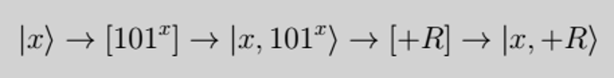
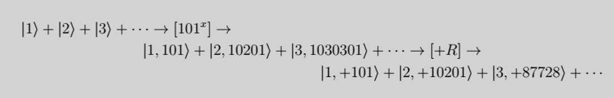

The fundamental property of RSA encryption is that it relies on it being extremely difficult to find prime factors of large numbers. This is because there really aren't many methods except trial and error to find the correct prime factors. Although this is difficult (and hence why RSA is an effective algorithm to use today) it is not impossible to break. With computer power constantly growing, it may even be possible to crack this algorithm on a classical computer in the future. However, by using a special algorithm called Shor’s algorithm, quantum computers have the capability to find these prime factors, and hence break the RSA algorithm, in a matter of seconds.
So how does it work?
Let N be a large number that's composed of 2 prime factors, p and q where p,q > 2.
Shor's Algorithm can be split into 2 parts in which the 1st part is manageable on a classical computer, and the 2nd part requires a quantum algorithm. The core idea of the 1st part is to start with a random guess, g, which will most likely be nowhere near to the correct solution. From this however, we can then try another guess which will be a lot more accurate.
Before looking at the process, there's some key ideas to understand.
Using an important theorem called Fermat's little theorem, we can say that for any 2 coprime numbers, A and B, if you multiply A by itself enough times, it will eventually be 1 less than some multiple of B, i.e Ar = tB + 1 where r,t ∈ ℕ.
For example, if A = 3 and B = 5 then we can write 34 = 81 = 16(5) + 1.
Consider if Ar = tB + 1 and Ax = t1B + m (where x ≠ r and B > m > 1) then
Ar+x = (tB + 1)(t1B + m)
= (tt1B + t1 + mt)B + m
= t2B + m (where t2 = tt1B + t1 + m t ∈ ℕ).
Similarly, A
2r+x = t
2B + m and so on such that A
nr+x = t
2B + m for n ∈ ℕ. This means that values of x which repeat periodically with a period of r will have the same value for m.
For example, if A = 3, B = 5 and m = 3 such that 3
4 = 16(5) + 1 and 3
5 = 48(5) + 3 then 3
4+5 = 3
9 = 3936(5) + 3 and 3
2(4)+5 = 3
13= 318864(5) + 3 and so on.
With this knowledge, we can now look at a general idea of how Shor's Algorithm works.
Shor's Algorithm Method
1. Select a random integer, g, such that 1 < g < N. This will be our initial guess for one of the prime factors of N.
2. Find the highest common factor of g and N [i.e. gcd(g,N)] using the
Euclidean algorithm.
3. If gcd(g,N) ≠ 1, then this means g and N share a common factor. We can divide N by this common factor to find one of the prime factors of N and hence are done. Note that since N is so large, the chance that gcd(g,N) ≠ 1 is
EXTREMELY unlikely.
4. Otherwise g and N are coprime. This means we can find numbers r,t ∈ ℕ where g
r = tN + 1.
5. Rearranging this gives g
r - 1 = tN + 1 → (g
r/2 + 1)(g
r/2 - 1) = tN. Hence we can find 2 integers which, when multiplied together, gives us a multiple of N. Note how this looks very similar to what we want to find, i.e. 2 prime numbers which multiply together to give N.
6. To find the value of r, a quantum computer must be used with the following quantum computation:
a) Take an integer, x as an input and raise our guess, g, to this value of x, outputting the value of x and g
x.
b) After this, calculate g
x (mod N) which is the integer remainder when dividing g
x by N (call this +R) and output the value of x and +R.
c) As this is a quantum computer, multiple values of x can be sent in one input as a superposition, so we can send in values of x from 1 up to the value of N. From above we know that values of x which repeat periodically with a period of r will have the same value for +R.
d) Once all the values of x have gone through the computation and the answers have been calculated, one of the answers will be outputted at random.
e) Due to special properties of quantum computation, since the output of +R will have multiple values of x it corresponds to, all these values will be outputted. These values repeat with a frequency of 1/r.
f) This superposition of values is then passed through a linear transformation called a
quantum Fourier transform which produces a superposition of multiples of 1/r, where one of these multiples is outputted.
g) We repeat this calculation a few times so that several multiples of 1/r are outputted and from this can find the common factor of these values, which is 1/r, and hence have found r.
7. Now we know r, we can calculate the values of (g
r/2 + 1) and (g
r/2 - 1). If r is odd, or one of these values is a multiple of N and the other a factor of t, then the value of r is useless and so go back to step 1.
8. Otherwise (g
r/2 + 1)(g
r/2 - 1) = tN where (g
r/2 + 1) is some multiple of the prime p and (g
r/2 - 1) is some multiple of the prime q. (i.e. (ap)(bq) = t(pq) for a,b ∈ ℕ)
9. Hence we can apply the Euclidean algorithm to find the gcd(g
r/2 + 1, N) = p and the gcd(g
r/2 - 1, N) = q and so have factored our large number N into its 2 prime factors p and q, cracking the key.
The reason a quantum computer has to be used to find r is because it can simultaneously calculate multiple answers for a single input by using a quantum superposition. Note that once this superposition of answers is
measured, only one of these answers is outputted randomly, with each answer having a different probability that it is outputted. This differs from a classical computer which can only give one solution for one input and so would take an unconventional amount of time to find a solution to r.
Remember, not every randomly-generated value of g will work to give a suitable value for r. As stated above, r can't be odd otherwise calculating (g
r/2 + 1) and (g
r/2 - 1) will most likely give non-integer values which aren't relevant for us. Furthermore, if the calculated value of r means that one value of (g
r/2 + 1), (g
r/2 - 1) is a multiple of N and the other a factor of t, then we won't be able to find the prime factors p and q as they have not been split between the 2 brackets and so we would have to manually split it which defeats the purpose of this algorithm.
Overall, for any initial guess, g, we make, there is at least a 37.5% chance this method will work. Although this seems low, if we repeat this algorithm until it eventually works then it is 99% likely it will only take fewer than 10 guesses to solve.
Shor’s Algorithm - Example
Consider if we wanted to find the 2 prime numbers that multiplied together to give N = 314191.
Let's start with a random value, g = 101. We can then use the Euclidean algorithm to find the gcd(101, 314191) which is 1. This means we need to find r,t ∈ ℕ such that 101
r = 314191t + 1.
If we had a quantum computer, we would then create a superposition of all the numbers, x ∈ [1, 314191] and complete the following computations:

This sequence takes the superposition for x and raises 101 to the power of x then finds (mod 314191) of this solution. It would look something like this:

By measuring the final computation, this will output one of the remainders, +R, as well as creating a superposition of all the corresponding values of x which had this remainder, i.e. |x⟩ + |x + r⟩ + |x + 2r⟩ + … In this case, if |+74126⟩ is the remainder outputted, then this will give the following superposition of |20⟩ + |4367⟩ + |8714⟩ + …
This superposition is then passed through the quantum Fourier transform which will produce a superposition in the form |1/r⟩ + |2/r⟩ + |3/r⟩ + … In this example, the superposition will be |1/4347⟩ + |2/4347⟩ + |3/4347⟩ + …
This superposition can then be measured a couple of times, where each time one of the values is outputted at random, and from this we can find the common factor of the values and hence r. For example, if we take 3 measurements and are given the values |5/4347⟩, |8/4347⟩, |3/4347⟩ then we can compute the common factor to be 1/4347 and so r = 4347.
But now we have a problem, because r is odd and so won't give an integer solution to (101
r/2 + 1)(101
r/2 - 1). This means the value of g = 101 is not a suitable value and so will have to try a new random integer.
Let's now try a new random value for g, such as g = 127. By repeating the process for this value of g, we get that r = 17388. This satisfies the conditions for r and so we now know that (127
17388/2 + 1)(127
17388/2 - 1) = (127
8694 + 1)(127
8694 - 1) = 314191t for some t ∈ ℕ.
Again, by using the Euclidean algorithm, we can calculate the gcd(127
8694 + 1, 314191) = 829 and gcd(127
8694 - 1, 314191) = 379 which means the 2 prime numbers which produce N = 314191 is p = 829 and q = 379.
Written by Louise